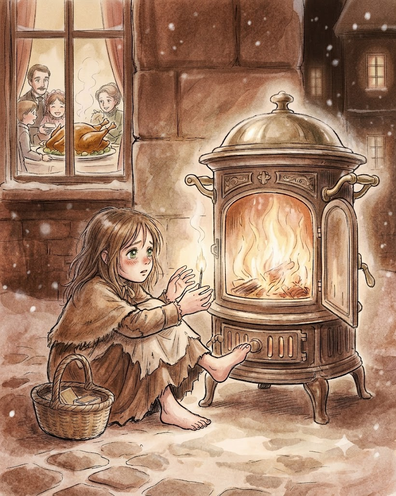
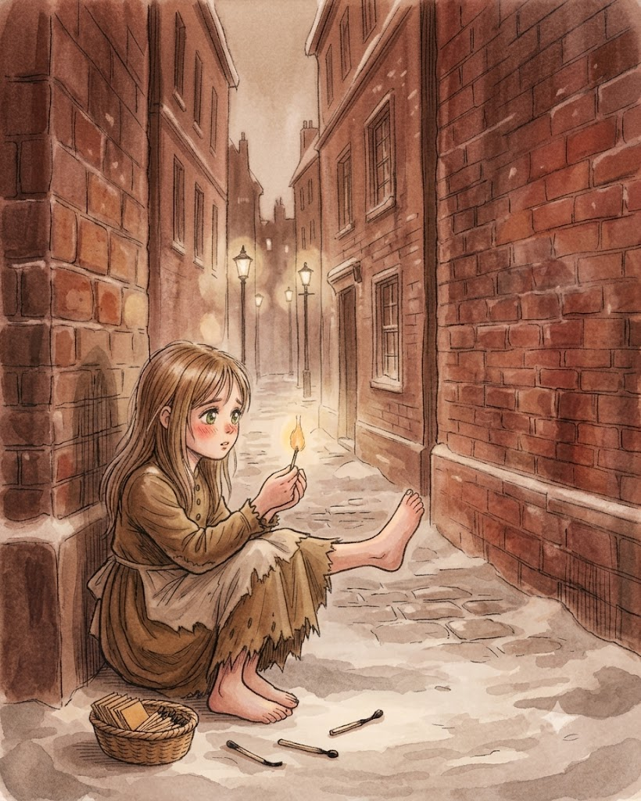

집 두 채 사이 모퉁이에 다른 집보다 길 쪽으로 더 튀어나온 곳이 있었는데 소녀는 그곳에 앉아서 발을 끌어당겨 몸을 웅크렸다. 점점 더 몸이 추웠다. 하지만 집에 갈 엄두가 나지 않았다. 성냥을 팔지 못했기에, 1센트도 벌지 못했기에 아버지는 분명 이 소녀를 흠씬 두들겨 팰 것이다. 게다가 집은 너무 춥고 지붕 말고는 불어대는 바람을 가릴 게 없었다. 제일 크게 갈라진 틈을 지푸라기와 천 조각으로 막았는데도 그랬다. 손은 동상을 입은 듯 거의 움직일 수도 없었다. 작은 성냥 하나가 온기를 어느 정도 더해줄지도 몰랐다! 소녀가 성냥갑에서 성냥 하나를 꺼내 벽에 그어서 손을 따뜻하게 할 수만 있다면……. 소녀는 하나를 꺼냈다. 치지직! 성냥은 탁 소리를 내며 타올랐다! 온기를 주며 작은 초처럼 환한 불꽃을 일으켰다. 소녀가 그 불꽃 위로 손을 올리자, 이상한 빛이 일었다! 정말이지 반짝반짝 빛나는 황동 손잡이와 뚜껑이 달린 거대한 쇠 난로 앞에 자신이 앉아 있는 것 같았다. 불이 얼마나 멋지게 타오르는지! 얼마나 편안한지! 소녀가 발도 녹이려 발을 내밀었다. 문득 작은 불꽃이 꺼지고 난로는 사라졌다. 손안에는 다 타버린 성냥만 남아 있었다.

